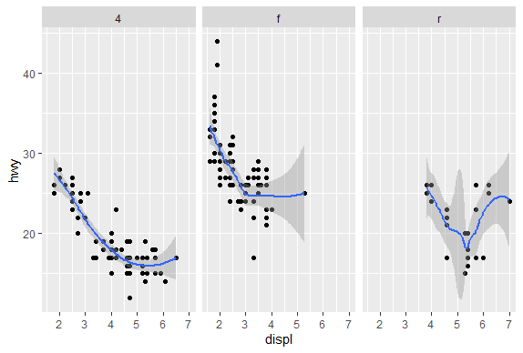
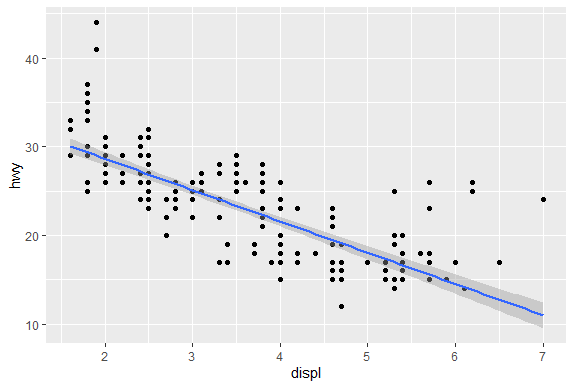
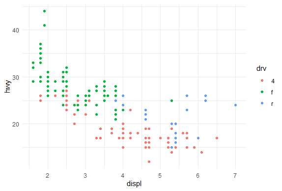
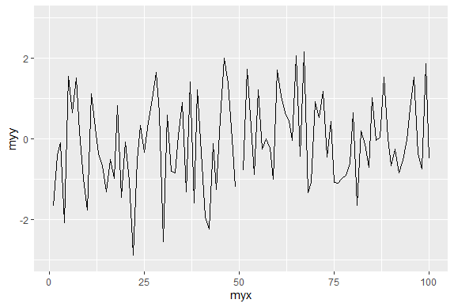
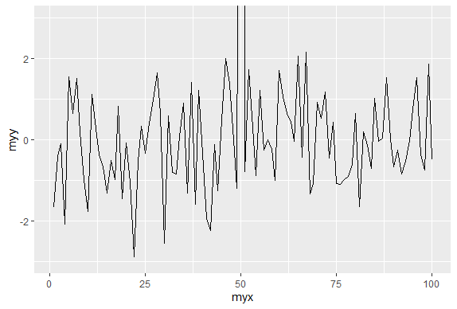
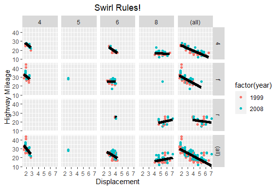

GGPlot2 Part2
library(swirl)
swirl()
| Welcome to swirl! Please sign in. If you've been here before, use the same name as
| you did then. If you are new, call yourself something unique.
What shall I call you? Krishnakanth Allika
| Please choose a course, or type 0 to exit swirl.
1: Exploratory Data Analysis
2: Take me to the swirl course repository!
Selection: 1
| Please choose a lesson, or type 0 to return to course menu.
1: Principles of Analytic Graphs 2: Exploratory Graphs
3: Graphics Devices in R 4: Plotting Systems
5: Base Plotting System 6: Lattice Plotting System
7: Working with Colors 8: GGPlot2 Part1
9: GGPlot2 Part2 10: GGPlot2 Extras
11: Hierarchical Clustering 12: K Means Clustering
13: Dimension Reduction 14: Clustering Example
15: CaseStudySelection: 9
| Attempting to load lesson dependencies...
| Package ‘ggplot2’ loaded correctly!
| | 0%
| GGPlot2_Part2. (Slides for this and other Data Science courses may be found at github
| https://github.com/DataScienceSpecialization/courses/. If you care to use them, they
| must be downloaded as a zip file and viewed locally. This lesson corresponds to
| 04_ExploratoryAnalysis/ggplot2.)
...
|== | 2%
| In a previous lesson we showed you the vast capabilities of qplot, the basic
| workhorse function of the ggplot2 package. In this lesson we'll focus on some
| fundamental components of the package. These underlie qplot which uses default values
| when it calls them. If you understand these building blocks, you will be better able
| to customize your plots. We'll use the second workhorse function in the package,
| ggplot, as well as other graphing functions.
...
|=== | 4%
| Do you remember what the gg of ggplot2 stands for?
1: grammar of graphics
2: good grief
3: great graphics
4: goto graphics
Selection: 1
| That's the answer I was looking for.
|===== | 6%
| A "grammar" of graphics means that ggplot2 contains building blocks with which you
| can create your own graphical objects. What are these basic components of ggplot2
| plots? There are 7 of them.
...
|====== | 8%
| Obviously, there's a DATA FRAME which contains the data you're trying to plot. Then
| the AESTHETIC MAPPINGS determine how data are mapped to color, size, etc. The GEOMS
| (geometric objects) are what you see in the plot (points, lines, shapes) and FACETS
| are the panels used in conditional plots. You've used these or seen them used in the
| first ggplot2 (qplot) lesson.
...
|======== | 10%
| There are 3 more. STATS are statistical transformations such as binning, quantiles,
| and smoothing which ggplot2 applies to the data. SCALES show what coding an aesthetic
| map uses (for example, male = red, female = blue). Finally, the plots are depicted on
| a COORDINATE SYSTEM. When you use qplot these were taken care of for you.
...
|========== | 12%
| Do you remember what the "artist's palette" model means in the context of plotting?
1: we draw pictures
2: we mix paints
3: plots are built up in layers
4: things get messy
Selection: 3
| You nailed it! Good job!
|=========== | 15%
| As in the base plotting system (and in contrast to the lattice system), when building
| plots with ggplot2, the plots are built up in layers, maybe in several steps. You can
| plot the data, then overlay a summary (for instance, a regression line or smoother)
| and then add any metadata and annotations you need.
...
|============= | 17%
| We'll keep using the mpg data that comes with the ggplot2 package. Recall the
| versatility of qplot. Just as a refresher, call qplot now with 5 arguments. The first
| 3 deal with data - displ, hwy, and data=mpg. The fourth is geom set equal to the
| concatenation of the two strings, "point" and "smooth". The fifth is facets set equal
| to the formula .~drv. Try this now.
qplot(displ,hwy,data=mpg,geom=c("point","smooth"),facets=.~drv)
geom_smooth()using method = 'loess' and formula 'y ~ x'

| You got it!
|=============== | 19%
| We see a 3 facet plot, one for each drive type (4, f, and r). Now we'll see how
| ggplot works. We'll build up a similar plot using the basic components of the
| package. We'll do this in a series of steps.
...
|================ | 21%
| First we'll create a variable g by assigning to it the output of a call to ggplot
| with 2 arguments. The first is mpg (our dataset) and the second will tell ggplot what
| we want to plot, in this case, displ and hwy. These are what we want our aesthetics
| to represent so we enclose these as two arguments to the function aes. Try this now.
g<-ggplot(mpg,aes(displ,hwy))
| You are quite good my friend!
|================== | 23%
| Notice that nothing happened? As in the lattice system, ggplot created a graphical
| object which we assigned to the variable g.
...
|==================== | 25%
| Run the R command summary with g as its argument to see what g contains.
summary(g)
data: manufacturer, model, displ, year, cyl, trans, drv, cty, hwy, fl, class [234x11] mapping: x = ~displ, y = ~hwy faceting: <ggproto object: Class FacetNull, Facet, gg> compute_layout: function draw_back: function draw_front: function draw_labels: function draw_panels: function finish_data: function init_scales: function map_data: function params: list setup_data: function setup_params: function shrink: TRUE train_scales: function vars: function super: <ggproto object: Class FacetNull, Facet, gg>| You are quite good my friend!
|===================== | 27%
| So g contains the mpg data with all its named components in a 234 by 11 matrix. It
| also contains a mapping, x (displ) and y (hwy) which you specified, and no faceting.
...
|======================= | 29%
| Note that if you tried to print g with the expressions g or print(g) you'd get an
| error! Even though it's a great package, ggplot doesn't know how to display the data
| yet since you didn't specify how you wanted to see it. Now type g+geom_point() and
| see what happens.
g+geom_point()

| You are quite good my friend!
|======================== | 31%
| By calling the function geom_point you added a layer. By not assigning the expression
| to a variable you displayed a plot. Notice that you didn't have to pass any arguments
| to the function geom_point. That's because the object g has all the data stored in
| it. (Remember you saw that when you ran summary on g before.) Now use the expression
| you just typed (g + geom_point()) and add to it another layer, a call to
| geom_smooth(). Notice the red message R gives you.
g+geom_point()+geom_smooth()
geom_smooth()using method = 'loess' and formula 'y ~ x'

| You got it!
|========================== | 33%
| The gray shadow around the blue line is the confidence band. See how wide it is at
| the right? Let's try a different smoothing function. Use the up arrow to recover the
| expression you just typed, and instead of calling geom_smooth with no arguments, call
| it with the argument method set equal to the string "lm".
g+geom_point()+geom_smooth(method="lm")
geom_smooth()using formula 'y ~ x'

| Excellent work!
|============================ | 35%
| By changing the smoothing function to "lm" (linear model) ggplot2 generated a
| regression line through the data. Now recall the expression you just used and add to
| it another call, this time to the function facet_grid. Use the formula . ~ drv as it
| argument. Note that this is the same type of formula used in the calls to qplot.
g+geom_point()+geom_smooth(method="lm")+facet_grid(.~drv)
geom_smooth()using formula 'y ~ x'

| Your dedication is inspiring!
|============================= | 38%
| Notice how each panel is labeled with the appropriate factor. All the data associated
| with 4-wheel drive cars is in the leftmost panel, front-wheel drive data is shown in
| the middle panel, and rear-wheel drive data in the rightmost. Notice that this is
| similar to the plot you created at the start of the lesson using qplot. (We used a
| different smoothing function than previously.)
...
|=============================== | 40%
| So far you've just used the default labels that ggplot provides. You can add your own
| annotation using functions such as xlab(), ylab(), and ggtitle(). In addition, the
| function labs() is more general and can be used to label either or both axes as well
| as provide a title. Now recall the expression you just typed and add a call to the
| function ggtitle with the argument "Swirl Rules!".
g+geom_point()+geom_smooth(method="lm")+facet_grid(.~drv)+ggtitle("Swirl Rules!")
geom_smooth()using formula 'y ~ x'

| You are doing so well!
|================================ | 42%
| Now that you've seen the basics we'll talk about customizing. Each of the “geom”
| functions (e.g., _point and _smooth) has options to modify it. Also, the function
| theme() can be used to modify aspects of the entire plot, e.g. the position of the
| legend. Two standard appearance themes are included in ggplot. These are theme_gray()
| which is the default theme (gray background with white grid lines) and theme_bw()
| which is a plainer (black and white) color scheme.
...
|================================== | 44%
| Let's practice modifying aesthetics now. We'll use the graphic object g that we
| already filled with mpg data and add a call to the function geom_point, but this time
| we'll give geom_point 3 arguments. Set the argument color equal to "pink", the
| argument size to 4, and the argument alpha to 1/2. Notice that all the arguments are
| set equal to constants.
g+geom_point(color="pink",size=4,alpha=0.5)

| You are doing so well!
|==================================== | 46%
| Notice the different shades of pink? That's the result of the alpha aesthetic which
| you set to 1/2. This aesthetic tells ggplot how transparent the points should be.
| Darker circles indicate values hit by multiple data points.
...
|===================================== | 48%
| Now we'll modify the aesthetics so that color indicates which drv type each point
| represents. Again, use g and add to it a call to the function geom_point with 3
| arguments. The first is size set equal to 4, the second is alpha equal to 1/2. The
| third is a call to the function aes with the argument color set equal to drv. Note
| that you MUST use the function aes since the color of the points is data dependent
| and not a constant as it was in the previous example.
g+geom_point(size=4,alpha=0.5,aes(color=drv))

| That's a job well done!
|======================================= | 50%
| Notice the helpful legend on the right decoding the relationship between color and
| drv.
...
|========================================= | 52%
| Now we'll practice modifying labels. Again, we'll use g and add to it calls to 3
| functions. First, add a call to geom_point with an argument making the color
| dependent on the drv type (as we did in the previous example). Second, add a call to
| the function labs with the argument title set equal to "Swirl Rules!". Finally, add a
| call to labs with 2 arguments, one setting x equal to "Displacement" and the other
| setting y equal to "Hwy Mileage".
g+geom_point(aes(color=drv))+labs(title="Swirl Rules!")+labs(x="Displacement",y="Hwy Mileage")

| You are amazing!
|========================================== | 54%
| Note that you could have combined the two calls to the function labs in the previous
| example. Now we'll practice customizing the geom_smooth calls. Use g and add to it a
| call to geom_point setting the color to drv type (remember to use the call to the aes
| function), size set to 2 and alpha to 1/2. Then add a call to geom_smooth with 4
| arguments. Set size equal to 4, linetype to 3, method to "lm", and se to FALSE.
g+geom_point(aes(color=drv),size=2,alpha=0.5)+geom_smooth(size=4,linetype=3,method="lm",se=FALSE)
geom_smooth()using formula 'y ~ x'

| Perseverance, that's the answer.
|============================================ | 56%
| What did these arguments do? The method specified a linear regression (note the
| negative slope indicating that the bigger the displacement the lower the gas
| mileage), the linetype specified that it should be dashed (not continuous), the size
| made the dashes big, and the se flag told ggplot to turn off the gray shadows
| indicating standard errors (confidence intervals).
...
|============================================= | 58%
| Finally, let's do a simple plot using the black and white theme, theme_bw. Specify g
| and add a call to the function geom_point with the argument setting the color to the
| drv type. Then add a call to the function theme_bw with the argument base_family set
| equal to "Times". See if you notice the difference.
g+geom_point(aes(color=drv))+theme_bw(base_family = "Times")
There were 13 warnings (use warnings() to see them)

| Nice work!
|=============================================== | 60%
| No more gray background! Also, if you have good eyesight, you'll notice that the font
| in the labels changed.
...
|================================================= | 62%
| One final note before we go through a more complicated, layered ggplot example, and
| this concerns the limits of the axes. We're pointing this out to emphasize a subtle
| difference between ggplot and the base plotting function plot.
...
|================================================== | 65%
| We've created some random x and y data, called myx and myy, components of a dataframe
| called testdat. These represent 100 random normal points, except halfway through, we
| made one of the points be an outlier. That is, we set its y-value to be out of range
| of the other points. Use the base plotting function plot to create a line plot of
| this data. Call it with 4 arguments - myx, myy, type="l", and ylim=c(-3,3). The
| type="l" tells plot you want to display the data as a line instead of as a
| scatterplot.
warning messages from top-level task callback 'mini'
There were 40 warnings (use warnings() to see them)
play()
| Entering play mode. Experiment as you please, then type nxt() when you are ready to
| resume the lesson.
g+geom_point(aes(color=drv))+theme_dark()

g+geom_point(aes(color=drv))+theme_minimal()

g+geom_point(aes(color=drv))+theme_grey()

nxt()
| Resuming lesson...
| We've created some random x and y data, called myx and myy, components of a dataframe
| called testdat. These represent 100 random normal points, except halfway through, we
| made one of the points be an outlier. That is, we set its y-value to be out of range
| of the other points. Use the base plotting function plot to create a line plot of
| this data. Call it with 4 arguments - myx, myy, type="l", and ylim=c(-3,3). The
| type="l" tells plot you want to display the data as a line instead of as a
| scatterplot.
plot(myx,myy,type="l",ylim=c(-3,3))

| You got it!
|==================================================== | 67%
| Notice how plot plotted the points in the (-3,3) range for y-values. The outlier at
| (50,100) is NOT shown on the line plot. Now we'll plot the same data with ggplot.
| Recall that the name of the dataframe is testdat. Create the graphical object g with
| a call to ggplot with 2 arguments, testdat (the data) and a call to aes with 2
| arguments, x set equal to myx, and y set equal to myy.
g<-ggplot(data=testdat,aes(x=myx,y=myy))
| You got it!
|====================================================== | 69%
| Now add a call to geom_line with 0 arguments to g.
g+geom_line()

| You got it right!
|======================================================= | 71%
| Notice how ggplot DID display the outlier point at (50,100). As a result the rest of
| the data is smashed down so you don't get to see what the bulk of it looks like. The
| single outlier probably isn't important enough to dominate the graph. How do we get
| ggplot to behave more like plot in a situation like this?
...
|========================================================= | 73%
| Let's take a guess that in addition to adding geom_line() to g we also just have to
| add ylim(-3,3) to it as we did with the call to plot. Try this now to see what
| happens.
g+geom_line()+ylim(-3,3)

| Perseverance, that's the answer.
|========================================================== | 75%
| Notice that by doing this, ggplot simply ignored the outlier point at (50,100).
| There's a break in the line which isn't very noticeable. Now recall that at the
| beginning of the lesson we mentioned 7 components of a ggplot plot, one of which was
| a coordinate system. This is a situation where using a coordinate system would be
| helpful. Instead of adding ylim(-3,3) to the expression g+geom_line(), add a call to
| the function coord_cartesian with the argument ylim set equal to c(-3,3).
g+geom_line()+coord_cartesian(ylim=c(-3,3))

| You are really on a roll!
|============================================================ | 77%
| See the difference? This looks more like the plot produced by the base plot function.
| The outlier y value at x=50 is not shown, but the plot indicates that it is larger
| than 3.
...
|============================================================== | 79%
| We'll close with a more complicated example to show you the full power of ggplot and
| the entire ggplot2 package. We'll continue to work with the mpg dataset.
...
|=============================================================== | 81%
| Start by creating the graphical object g by assigning to it a call to ggplot with 2
| arguments. The first is the dataset and the second is a call to the function aes.
| This call will have 3 arguments, x set equal to displ, y set equal to hwy, and color
| set equal to factor(year). This last will allow us to distinguish between the two
| manufacturing years (1999 and 2008) in our data.
g<-ggplot(data=mpg,aes(x=displ,y=hwy,color=factor(year)))
| All that practice is paying off!
|================================================================= | 83%
| Uh oh! Nothing happened. Does g exist? Of course, it just isn't visible yet since you
| didn't add a layer.
...
|=================================================================== | 85%
| If you typed g at the command line, what would happen?
1: a scatterplot would appear with 2 colors of points
2: I would have to try this to answer the question
3: R would return an error in red
Selection: 3
| You got it!
|==================================================================== | 88%
| We'll build the plot up step by step. First add to g a call to the function
| geom_point with 0 arguments.
g+geom_point()

| You nailed it! Good job!
|====================================================================== | 90%
| A simple, yet comfortingly familiar scatterplot appears. Let's make our display a 2
| dimensional multi-panel plot. Recall your last command (with the up arrow) and add to
| it a call the function facet_grid. Give it 2 arguments. The first is the formula
| drv~cyl, and the second is the argument margins set equal to TRUE. Try this now.
g+geom_point()+facet_grid(drv~cyl,margins=TRUE)

| Keep up the great work!
|======================================================================== | 92%
| A 4 by 5 plot, huh? The margins argument tells ggplot to display the marginal totals
| over each row and column, so instead of seeing 3 rows (the number of drv factors) and
| 4 columns (the number of cyl factors) we see a 4 by 5 display. Note that the panel in
| position (4,5) is a tiny version of the scatterplot of the entire dataset.
...
|========================================================================= | 94%
| Now add to your last command (or retype it if you like to type) a call to geom_smooth
| with 4 arguments. These are method set to "lm", se set to FALSE, size set to 2, and
| color set to "black".
g+geom_point()+facet_grid(drv~cyl,margins=TRUE)+geom_smooth(method="lm",se=FALSE,size=2,color="black")
geom_smooth()using formula 'y ~ x'

| Keep up the great work!
|=========================================================================== | 96%
| Angry Birds? Finally, add to your last command (or retype it if you like to type) a
| call to the function labs with 3 arguments. These are x set to "Displacement", y set
| to "Highway Mileage", and title set to "Swirl Rules!".
g+geom_point()+facet_grid(drv~cyl,margins=TRUE)+geom_smooth(method="lm",se=FALSE,size=2,color="black")+labs(x="Displacement",y="Highway Mileage",title="Swirl Rules!")
geom_smooth()using formula 'y ~ x'

| Keep working like that and you'll get there!
|============================================================================ | 98%
| You could have done these labels with separate calls to labs but we thought you'd be
| sick of this by now. Anyway, congrats! You've concluded part 2 of ggplot2. We hope
| you got enough mileage out of the lesson. If you like ggplot2 you can do some extras
| with the extra lesson.
...
|==============================================================================| 100%
| Would you like to receive credit for completing this course on Coursera.org?
1: Yes
2: No
Selection: 1
What is your email address? xxxxxx@xxxxxxxxxxxx
What is your assignment token? xXxXxxXXxXxxXXXx
Grade submission succeeded!
| You got it right!
| You've reached the end of this lesson! Returning to the main menu...
| Please choose a course, or type 0 to exit swirl.
1: Exploratory Data Analysis
2: Take me to the swirl course repository!
Selection: 0
| Leaving swirl now. Type swirl() to resume.
g+geom_point()+facet_grid(drv~cyl,margins=TRUE)+geom_smooth(method="lm",se=FALSE,size=2,color="black")+labs(x="Displacement",y="Highway Mileage",title="Swirl Rules!")+theme(plot.title = element_text(hjust = 0.5))
geom_smooth()using formula 'y ~ x'

rm(list=ls())
Last updated 2020-05-08 21:23:15.085181 IST
Comments